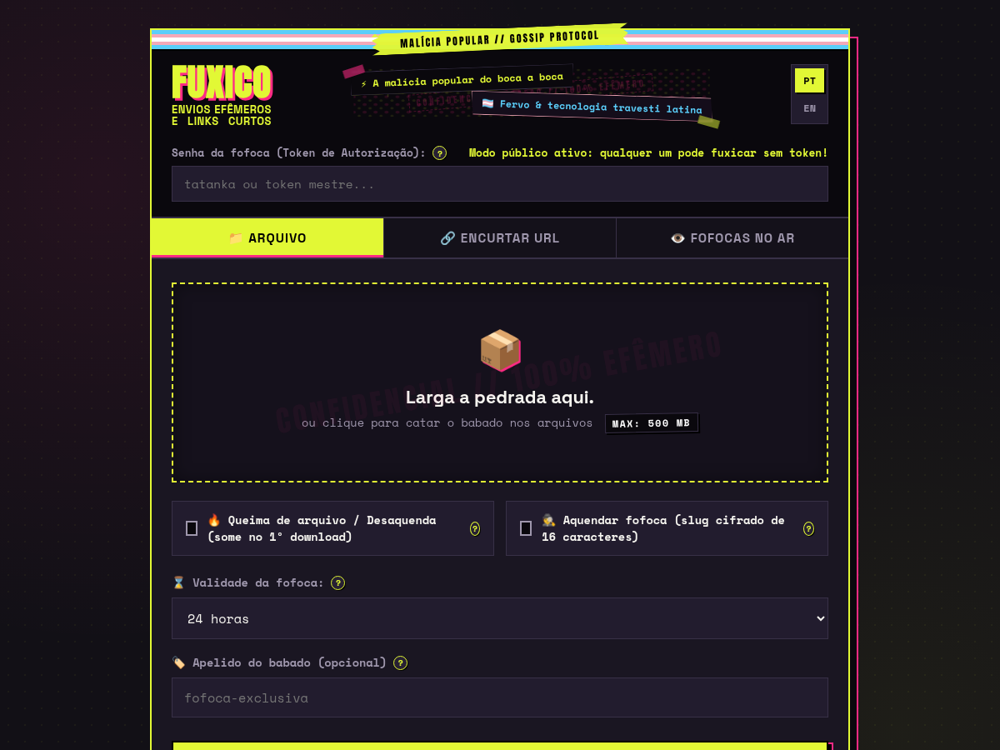
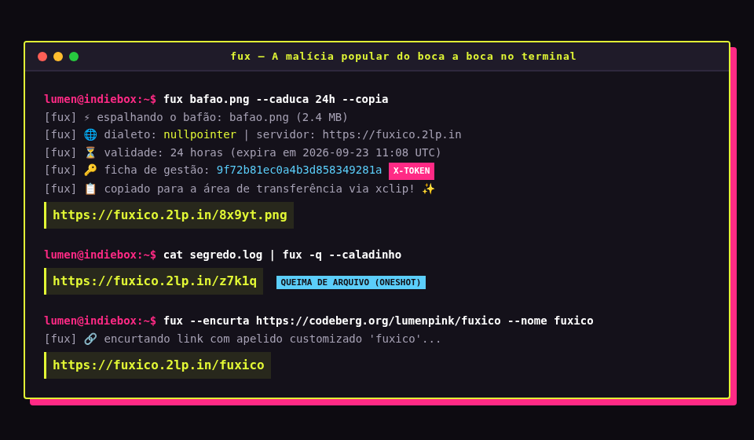

The street mischief of word-of-mouth. Sharing files on the edge shouldn't feel like a cold war military broadcast; it can be the sheer craft of passing information forward for the pure thrill of spinning the wheel.
⚡ 1-Line Universal Install
Install the native multi-platform CLI client in one command. Automatically detects your architecture (x86_64, aarch64, armv7, armv6) and installs the optimized standalone executable:
curl -fsSL https://fuxico.2lp.in/install.sh | bash
Then run immediately: fux photo.png --caduca 2h --copia or pipe anything through stdin: cat dump.sql | fux -q.
📸 Real Screenshots & Terminal Prints
High-resolution pixel-perfect captures of the live web interface and terminal CLI running in action:

Dropzone & Ephemeral Vault
Zine collage header, trans pride banner, custom retention duration, oneshot (*burn after first download*), and secret slug switches.

Live Vault Management
Real-time statistics, active fofocas, view counters, expiration timers, inline media previews, and immediate deletion via X-Token.

fux in Action
Golden rule: witty deboche on stderr, management tokens, and clean pure URL on stdout for seamless scripting & clipboard pipes.
🛡️ Core System Capabilities
Dual Protocol Engine
Drop-in compatibility with both 0x0.st (The Null Pointer) and rustypaste. Use upstream tools like rpaste or 0x0 seamlessly.
Single-File Standalone
Deploy anywhere with zero composer and zero package dependencies. Portable fuxico.php runs on any server with PHP 8.2+.
Direct Access Lockdown
All physical files are locked with Require all denied. Access is strictly mediated via streaming PHP with safe MIME detection and X-Content-Type-Options: nosniff.
Crypto Exemption
Dangerous scripts (.php, .exe, .sh) are blocked, but encrypted cryptographic payloads (.gpg, .asc, .pgp) are welcomed unconditionally.
Embedded SQLite Engine
Instant file indexing, view tracking, oneshot burn triggers, and automatic atomic purge with zero external database dependencies.
SBC & ARM32 First-Class
Dedicated standalone binaries for Orange Pi, Banana Pi, Raspberry Pi, BeagleBone, and older 32-bit hardware — no unzipping or glibc hassle.
🚀 Explore the Documentation
Dive into the deployment guides, complete CLI command manual, hardware compatibility lists, and protocol specs: